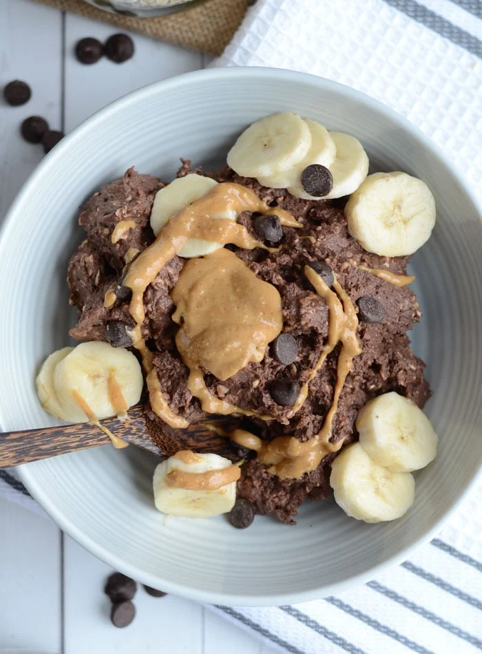

Protein Oats

Description
These brownie batter overnight oats are chocolate-packed, high in protein and the perfect fuel on-the-go.
The consistency is quite thick, somewhere between cookie dough and brownie batter. YUM!
Ingredients
- 1/2 cup (50 g) rolled oats
- 3/4 cup unsweetened almond milk
- 1 serving (44 g) Vega Performance Protein
in chocolate or vanilla (or any other pea protein)
- 2 tbsp (14 g) cocoa powder or raw cacao powder
- 1 packet stevia or stevia drops, to taste (optional for added sweetness)
- 1 tsp pure vanilla extract
- 1/8 tsp sea salt (optional, enhances chocolate flavour)
Steps
- Add all ingredients to a glass container or bowl and mix well with a spoon.
Make sure everything is mixed in and there are no dry clumps.
- Cover and place in the fridge overnight.